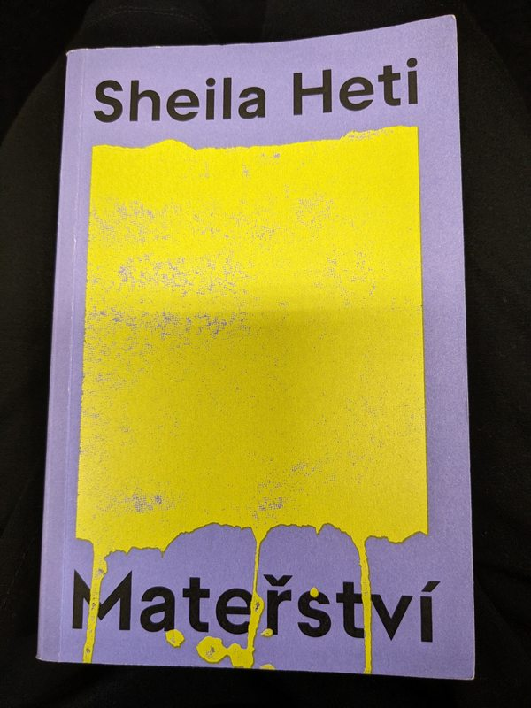

Po delší době tu mám jedno literární zklamání. Nebo spíš příklad toho, jak to vypadá, když máte z recenzí na internetu předem příliš velká očekávání.
Erika jednou řekla: “Pořídili jsme si dítě jako pojistku před pozdější lítostí.” Ale je správné někoho donutit žít, abychom nepocítili lítost?
Dalo by se říct, že kniha Mateřství kanadské novinářky Sheily Heti vznikala jako taková autorčina vlastní „terapie“, vyprávění má atmosféru deníkových záznamů. Autorka se ocitá na prahu čtyřicítky a uvědomuje si, že je nejvyšší čas rozhodnout se, zda podlehnout tlaku společnosti a tikajících biologických hodin a pořídit si s partnerem dítě. Ve hře je ale zároveň varianta dítě vůbec nemít, k níž se přiklání její partner, nicméně finální rozhodnutí ponechává alibisticky na Sheile. Celá kniha je tak jakýmsi záznamem autorčina několikaletého dilematu, tím, jak se její náhled na věc mění nejen v čase, ale také v průběhu cyklu. Při svém rozhodování neváhá brát v potaz nejen reálné příběhy blízkých žen ve svém okolí, ale do hry vstupují také jakési „ezo“ prvky v podobě tarotových karet, setkání s věštkyní či házení třemi mincemi, které na autorčiny otázky „odpovídají“ buď „ano“ nebo „ne“ (jedná se o věštecký systém mající původ v Číně).
Neřekla bych, že Mateřství je vyloženě špatná kniha. Spíš jen k tématu, které předestírá, přistupuje jiným způsobem, než by člověk očekával. Téma, které kniha otevírá, je skvělé, neotřelé, pro spoustu žen mého věku v dnešní době tolik aktuální a potřebné. Osobně bych ale uvítala trochu jinou formu zpracování. Na mě kniha působila jako takový neuspořádaný proud myšlenek (což vlastně, přiznávám, možná dost dobře vystihuje reálné pocity řady žen, které řeší stejné dilema, jako Sheila), mezi kterými se samozřejmě mihla řada zaznamenání hodných pravd (třeba ta, že ať už se jako žena rozhodnete jakkoliv, vždycky to bude z nějaké strany vnímáno jako špatné rozhodnutí), ale výsledný dojem mám bohužel takový rozpačitý. V poslední třetině knihy už mě to popravdě ani moc nebavilo, zdálo se mi, že se autorka pořád tak nějak točí v kruhu, nevyzná se sama v sobě a v tématu se pitvá ze všech stran. A vlastně se mi ulevilo, když jsem Mateřství dočetla.

Na druhou stranu je určitě třeba smeknout před tak upřímnou ženskou výpovědí. Sheila čtenáře vpouští hluboko do svého soukromí i své mysli a odhaluje mu své pocity ohledně mateřství zcela bez cenzury. V dnešní době je tento anti-mateřský “coming out” pořád tak nějak tabu… Že bych knihu vyloženě doporučila, to mi úplně nejde přes pusu. Pokud by pro vás téma z nejrůznějších důvodu mohlo být aktuální, asi by stála za přečtení. Ale já čekala bohužel víc.